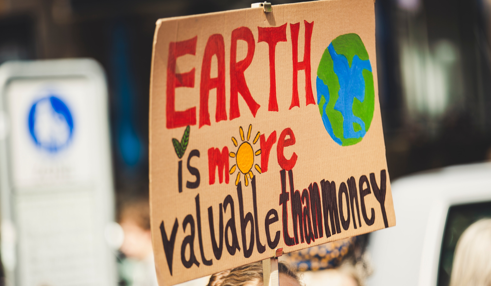
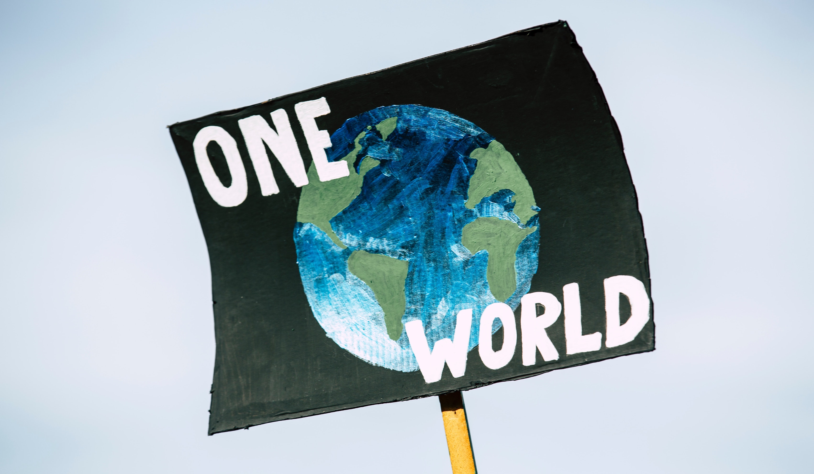

How much climate change?
That will be determined by how our emissions continue and exactly how our climate system responds to those emissions. Despite increasing awareness of climate change, our emissions of greenhouse gases continue on a relentless rise.
In 2013, the daily level of carbon dioxide in the atmosphere surpassed 400 parts per million for the first time in human history. The last time levels were that high was about three to five million years ago, during the Pliocene Epoch.
Severe heat weather can damage populations and crops. Dried soils are more susceptible to erosion, outbreaks of wildfires can increase, the evaporation of bodies of water can be devastating to marine populations, livestock and other animal populations may decline as well.
Mitigation – reducing climate change
Reducing emissions of and stabilizing the levels of heat-trapping greenhouse gases in the atmosphere
Involves reducing the flow of heat-trapping greenhouse gases into the atmosphere, either by reducing sources of these gases or enhancing the “sinks” that accumulate and store these gases.
“Stabilize greenhouse gas levels in a timeframe sufficient to allow ecosystems to adapt naturally to climate change, ensure that food production is not threatened and to enable economic development to proceed in a sustainable manner” (from the 2014 report on Mitigation of Climate Change from the United Nations Intergovernmental Panel on Climate Change, page 4).
Adaptation – adapting to life in a changing climate
Adapting to the climate change already in the pipeline
Involves adjusting to actual or expected future climate. The goal is to reduce our vulnerability to the harmful effects of climate change. It also encompasses making the most of any potential beneficial opportunities associated with climate change.
Earth’s climate has been relatively stable for the past 12,000 years and this stability has been crucial for the development of our modern civilization and life as we know it. Modern life is tailored to the stable climate we have become accustomed to. As our climate changes, we will have to learn to adapt. The faster the climate changes, the harder it could be.
So what can we actually do?
1. Increase energy efficiency and the use of renewable energy.
2. Conserve and protect water resources through efficiency, reuse, and stormwater management.
3. Eliminate waste, prevent pollution, and increase recycling.
4. Leverage agency acquisitions to foster markets for sustainable technologies and environmentally preferable materials, products, and services.
5. Design, construct, maintain, and operate high-performance sustainable buildings.
6. Utilize power management options and reduce the number of agency data centers.
_______________________________________________________
We have a single mission:
to protect and hand on the planet to the nwxt generation.
- Francois Hollande